<section role="doc-endnotes">内の内容も取り出して、ブログに貼り付ける必要があります。今日はアイアンファーム（鉄生産装置）を作るよ！
と、その前に、まずはミキサーを作って、安山岩合金のコストを半分にしよう。
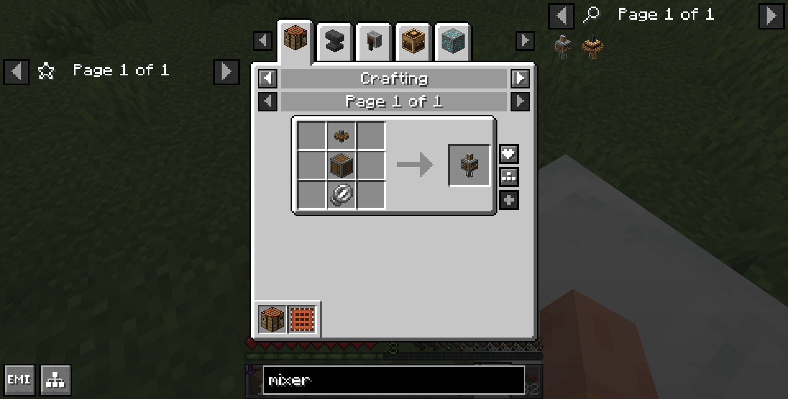
えーと、ミキサーには、歯車と、安山岩ケーシングと、泡だて器が必要だったね。
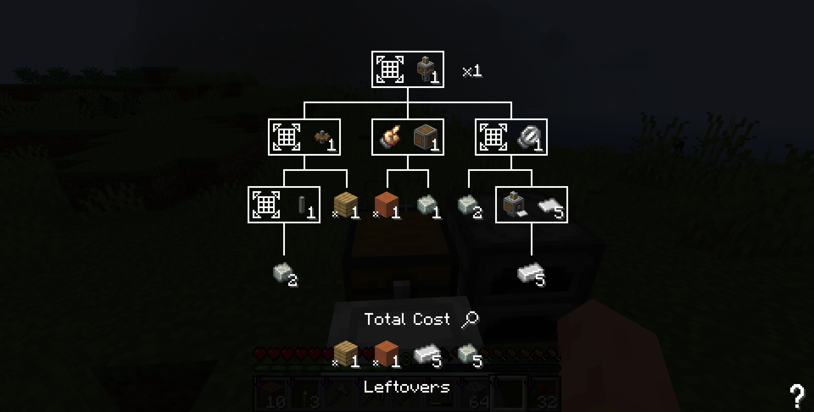
全体のクラフト過程をツリーで書くとこうなる。安山岩ケーシングの左にある手は何を表しているのかというと、剥いだ木に、安山岩合金を右クリックする必要があるということを表している。（要は加工プロセスのアイコン）同様に、鉄のシートの横のプレスは、鉄のシートを作るためには、鉄のインゴットをプレスにかける必要があるということを表している。つまり、ミキサーを作るためにはこのプレスも必要になるということだ。
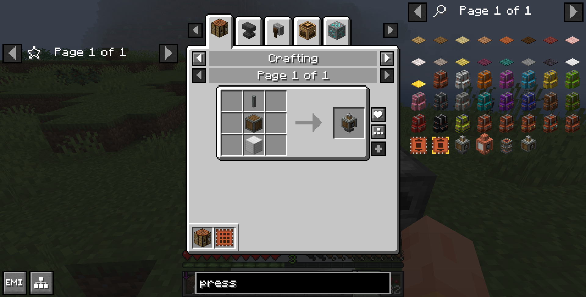
プレスを作ろうと思ったが、鉄が足りないやんけ。14個もないよ。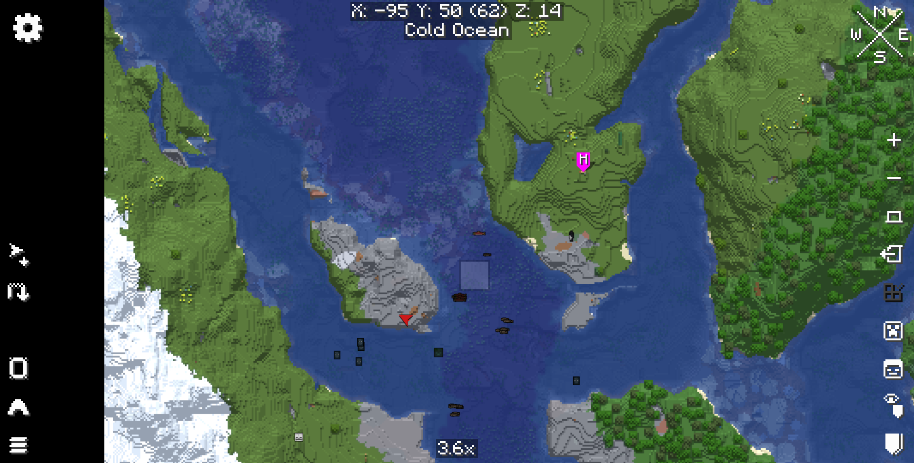
とりあえず、拠点の隣の石の島に来た。この地図はXaero’s World MapとXaero’s Minimapという二つのmodの地図だ。H(home)というピンが経っている場所が仮拠点で、そこから西に行ったところの、赤い矢印（プレイヤーの位置）がある島が今回の採掘場だ。（ちなみに、ピン機能はMinimapの方の機能で、矢印はWorld Mapの方の機能だ。）ここで鉄を採掘して、ミキサーを作る。
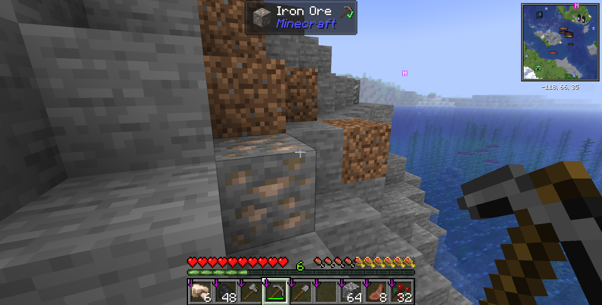
お、あるある。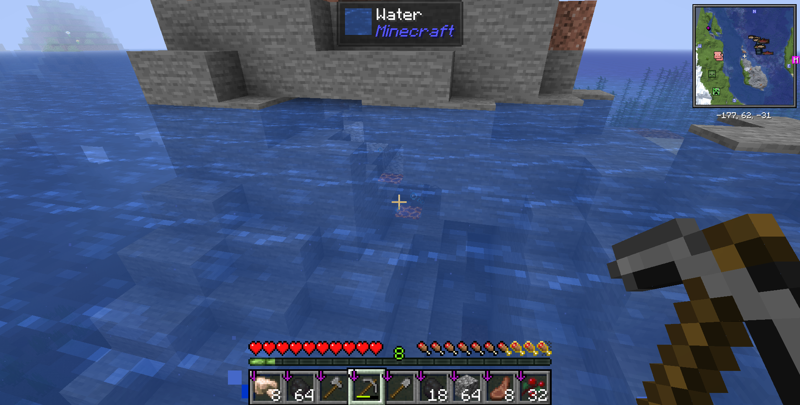
マグマブロックも回収しとこ。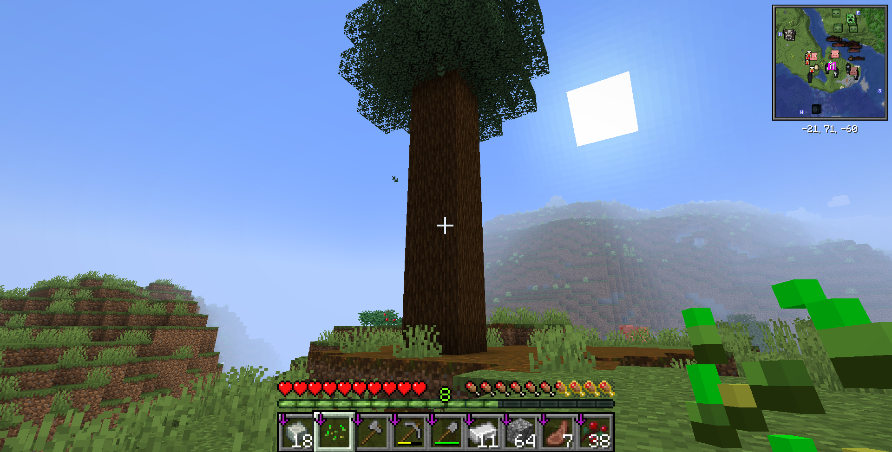
帰ってきました。木がいつの間にか育っていた。さて、鉄採集の結果は……！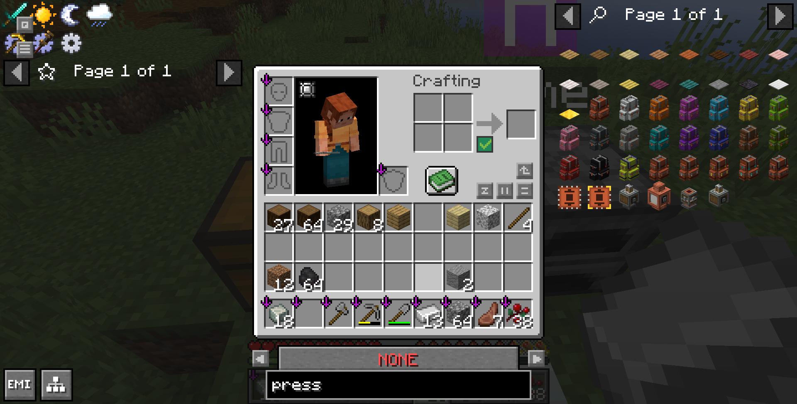
なんと、鉄が妖怪一足りない。どうしてだよぉ！仕方ないので、ミキサーはいったん諦めて、アイアンファームを先に作る。普通のCreateであれば、砂利をファンで洗浄することで鉄塊を作る方式のアイアンファームを作るのだが、今回はCreate Siftingというmodが入っているので、砂利を洗浄するのではなく、砂利をふるいにかけることで鉄塊を作る方式のアイアンファームを作る。
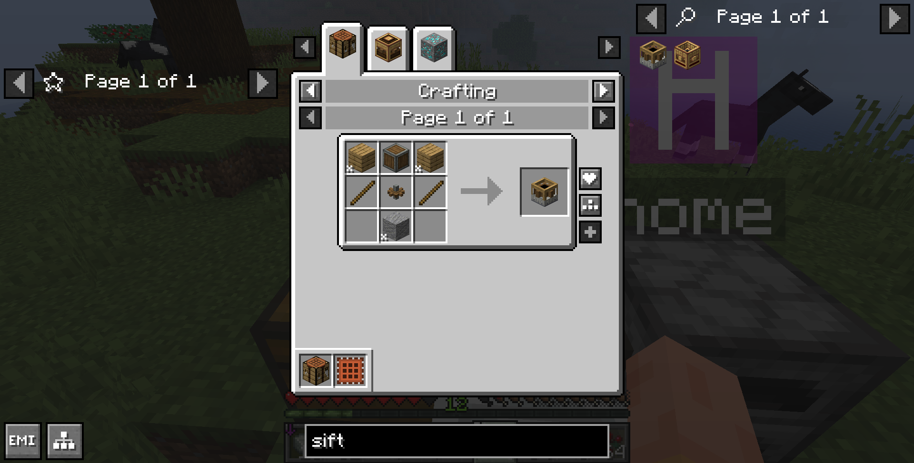
ふるいのレシピはこれ。木材二つと、安山岩ケーシング、棒二本、小さい歯車、後は石で作ることができる。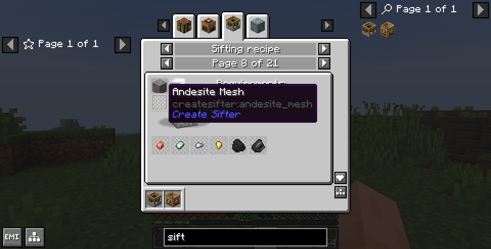
ただ、ふるいはただ設置しただけでは動かない。ふるいにメッシュを設置する必要がある。メッシュは四種類あり、今回は安山岩メッシュを使う。レシピは安山岩合金一つを棒八つで囲んで作るようなレシピになっている。同じアイテムをふるいにかけても、メッシュによって出てくるアイテムが変わる。安山岩メッシュの場合は、砂利をふるいにかけると、鉄塊と金塊、銅塊、亜鉛塊、石炭、火打石が確率で出てくる。ファンで洗浄する方式と比べると、砂利をふるいにかける方式の方が、鉄塊の出現率は高いが、出てくるアイテムの種類数が多いので、仕分けるのが大変になる。
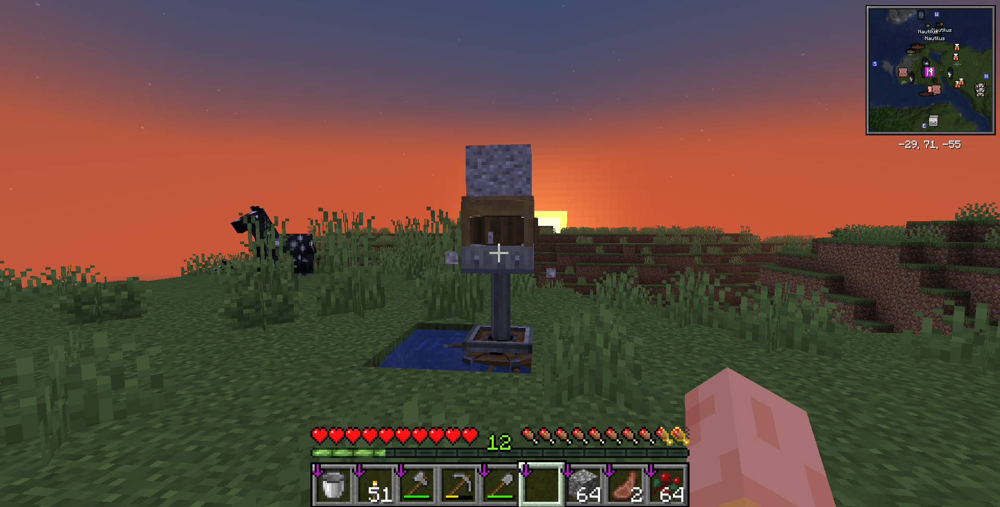
とりあえずふるいを設置して、下からシャフトと小さい水車を接続して、ふるいを回す。ふるいの上に砂利を投げると、砂利がふるいにかけられて、鉄塊やその他のアイテムがでてくる。なおアイテムはふるいの中に入っているので、右クリックで取り出す必要がある。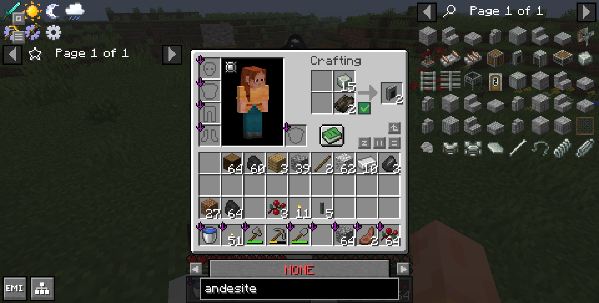
次に安山岩ファンネルを作る。安山岩合金と乾燥昆布で作れる。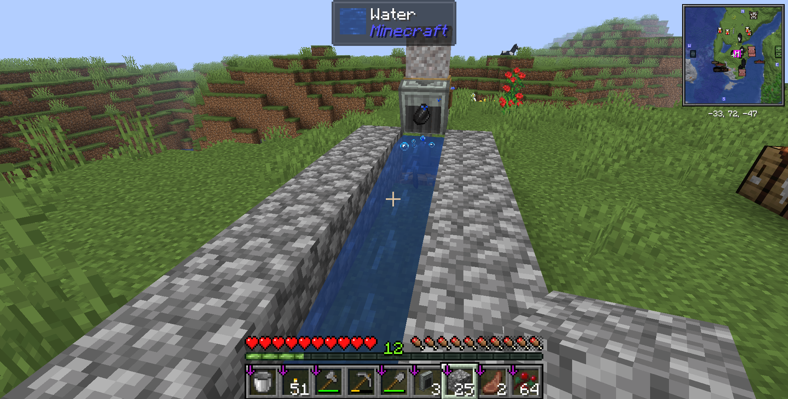
ふるいの横に水路を作って、そこにアイテムが落ちるように搬出モードの安山岩ファンネルを設置する。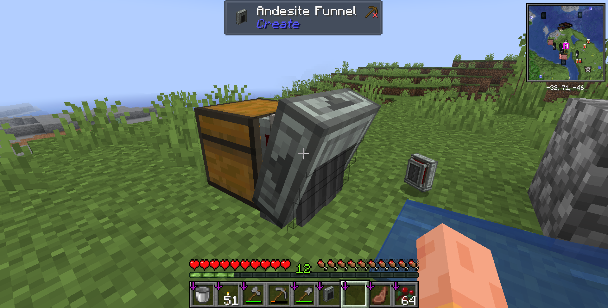
水路の先にチェストを設置し、そのチェストに繋がるように安山岩ファンネルを設置して、アイテムを回収する。安山岩ファンネルは、しゃがんだ状態で設置すると向きが変わって搬出から搬入になるので、しゃがんで設置することを忘れないようにする。どっちのモードなのかは、安山岩ファンネルの側面についている矢印で分かる。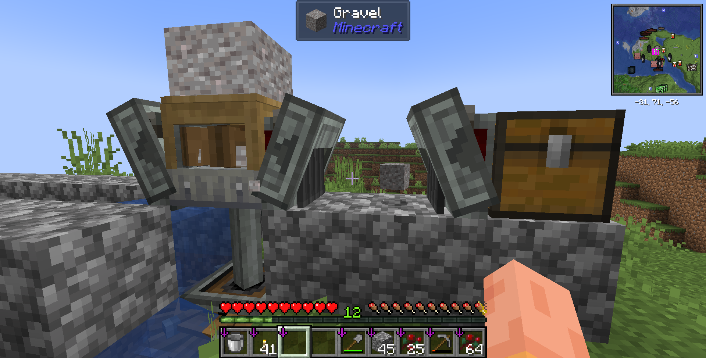
次にふるいに砂利を供給するための装置を作る。まずは安山岩ファンネルを搬入モードでふるいに設置する。次に、そのニマス横にチェストを設置して、チェストに砂利を入れる。チェストの横に安山岩ファンネルを設置して、安山岩ファンネルが向かい合わせになるようにして砂利をふるいに供給する。すると、動かないことが分かるのですべて撤去する。
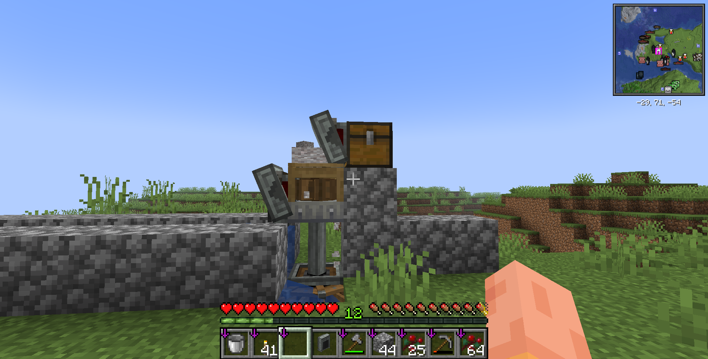
ふるいの斜め上にチェストを設置して、チェストの横に安山岩ファンネルを設置する。安山岩ファンネルは搬出モードで設置する。これでチェストの中に砂利を入れると、砂利がふるいに供給されるようになる。
本日はここまで。次は砂利を自動で作れるようにしよう。
この記事はTypst 1.50.1の実験的なHTML出力機能を用いて生成されました。
ソースコードのリポジトリはこちら